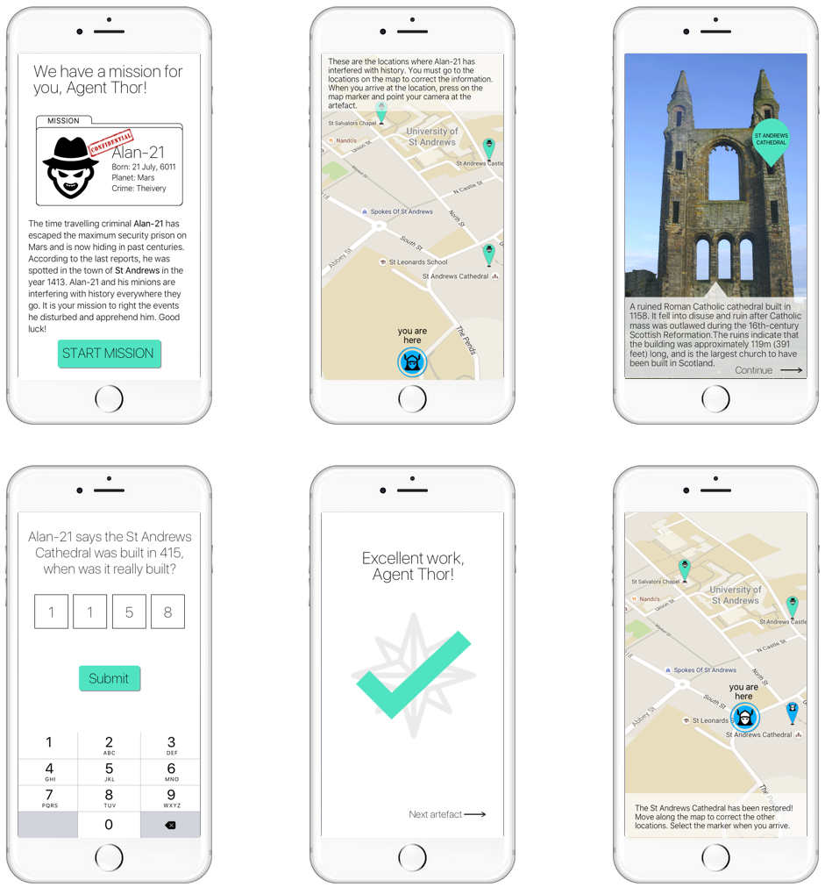

I am an aspiring UX designer and researcher based in Scotland. Originally from San Francsisco, where I worked in content for Yelp, I moved to Europe to pursue higher education.
I recently completed a Masters in Human-Computer Interaction I am looking for opportunities in UX research and/or design.
ResumeBelow are selected works I have completed during the course of my studies at St Andrews. They explore topics of work domain research, user-centred design, qualitative analysis, sketching solutions, wire-framing, prototyping, and implementation of interactive software.
I was part of a group project that had to design a networks-based system that could be used by Scottish tourists. Our group came up with a game concept for an app that allowed Scottish tourists to play an augmented reality app that guided them to different historical landmarks (figures below).
The screens designed for this app are combined into a demo video I made below.
As part of a User-Centred Design module, I was teamed up with three colleagues to research and design an app called Peruse. We were matched with a client wishing to implement the app concept and listened to their vision for the app while also factoring in our own research. The app, Peruse, is a location-based product search engine that matched users with products near them.
Our research elicited several domain requirements that were later refined to a list of system requirements. Some I designed below, mainly:
Beyond designing ideas, I have also implemented several projects on interactive platforms. Below depicts a use-case scenario for an Android app I implemented on a Galaxy Nexus 7. The app, "Ghost", enables a user to draw via touch and view their drawing in a separate activity, and/or save to their device.